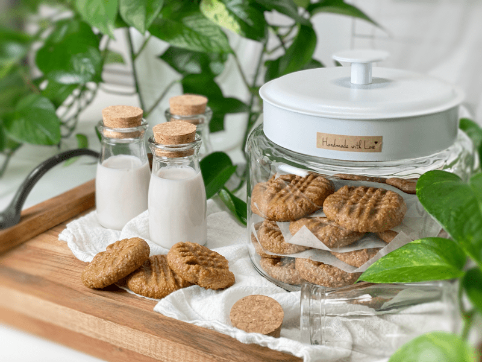
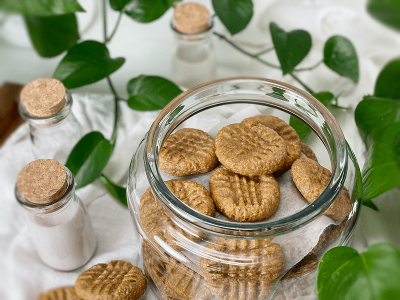
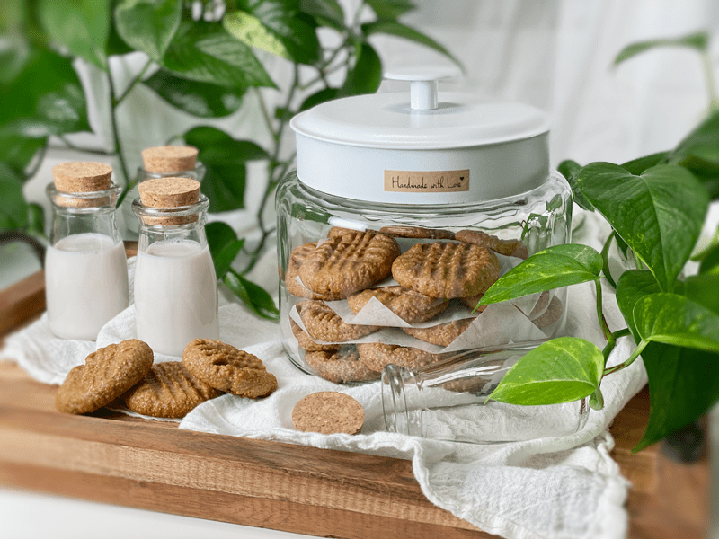
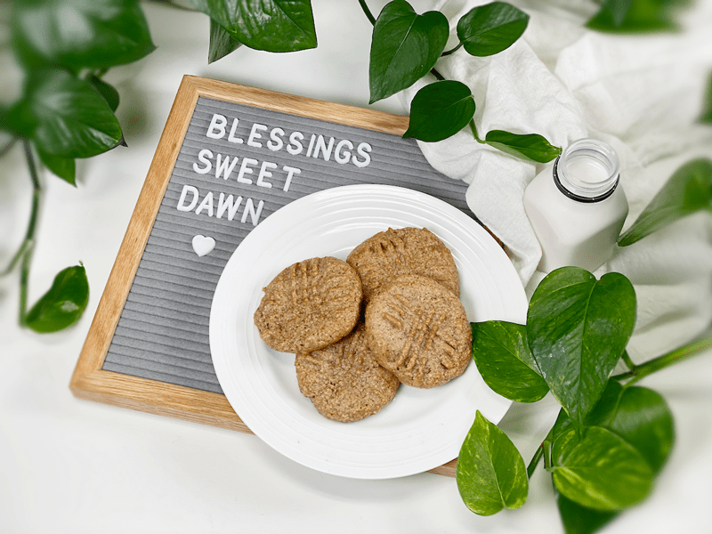
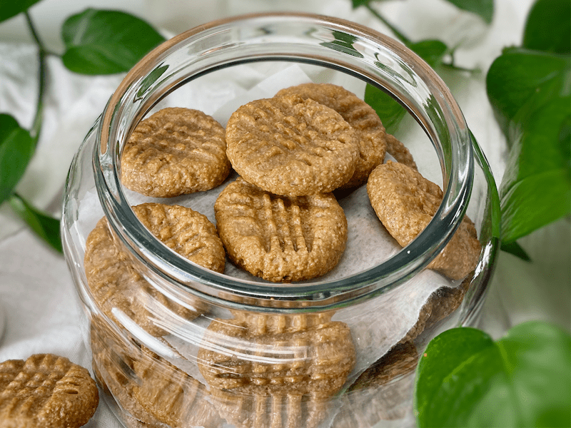
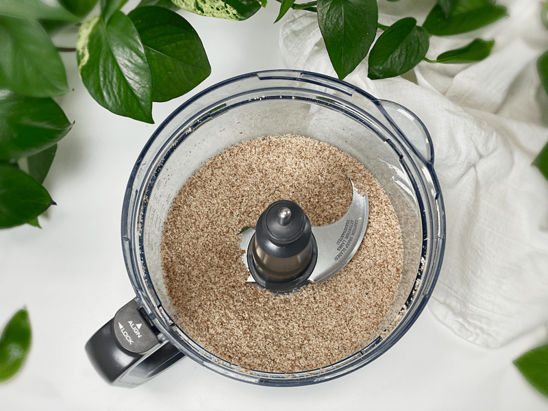

Peanut Butter Cookies | Raw and Baked Option
These vegan, gluten-free peanut butter cookies take on a healthified twist from the classic cookie your grandma would make. They are thick, soft, crunchy, and chewy–but most of all they are rich, sweet, and have that all-time favorite peanutty flavor. Every recipe collection needs a great peanut butter cookie. And that, my friends, is what I have for you today!

I developed this recipe on 12/12/10 and it was born out of necessity. You see when a non-raw foodie tells me that healthy food can’t taste good, I take it seriously, and the challenge is on! A friend of ours, Jason, who was very “sketchy” about this whole “raw food thing” was convinced that anything raw, gluten-free, and vegan just couldn’t measure up to the traditional, comforting foods he grew up on.
“Oh yeah? Then tell me, Jason, what is your all-time favorite cookie?” With a twinkle in his eye, he quickly responded, “Peanut butter!” I nodded, as if contemplating whether I could create a healthy version of his childhood favorite cookie. I knew I could, but I didn’t want to seem smug about it. I confidently informed him I would make him a raw peanut butter cookie that he would fall in love with.

After spending the afternoon in the kitchen, I could hardly wait to present this raw, vegan, gluten-free cookie to Jason. Later that evening, Jason and some other friends joined us for dinner. I have to sheepishly admit that I rushed dinner along just so we could get to dessert… the peanut butter cookies.
Once the dinner dishes were cleared, I scuttled off to the kitchen to grab the cookies. I made him close his eyes, promising me that he wouldn’t peek. I then laid the plate in front of him and told him he could look. He was so excited but hid it behind a tinge of skepticism. Out of politeness, he picked up the cookie and took a bite. His face lit up and soon there wasn’t even a crumb left to signify the existence of any cookie.
As I was doing dishes with my back to our guests, I heard comments such as: “I wouldn’t have known it was raw if she hadn’t told me…” “I normally don’t even care for peanut butter cookies, but that was amazing!…” “We need to sell these in the cafe!…” “OMG, these are amazing!” Now mind you, these comments are coming from three gentlemen who are not raw food eaters or even indulge in healthy eating. It just tickles me to feed good, healthy food to loved ones.

Whole Rolled Oats & Oat Flour
Whole Almonds (instead of OATS) – to make these grain-free
- If you don’t want to use oats, you can use whole almonds instead. I have tested this version and they are just as delicious.
- I do recommend soaking and dehydrating the almonds prior to making these. Soaking helps to break down the enzyme inhibitors and reduces phytic acid. If you do soak them, it’s best to dehydrate them so they can ground down to as much of flour as possible. Wet soaked almonds won’t work.
- The cookies that used almonds turn out crunchy on the outside and chewy on the inside.
- You can thank Dawn for this grain-free version since she asked what else could be used in place of oats.

Peanut Butter
- You can use any peanut butter. We prefer roasted peanut butter over that which is made from raw peanuts (which has a very different flavor). We use freshly ground peanut butter from the grinding machine at our local grocery store.
- If you decide to use commercially made peanut butter, be sure to double-check the ingredient list. Manufacturers love to add unnecessary and harmful ingredients such as corn syrup solids, sugar, soy protein, hydrogenated vegetable oils, and much more.
- You can use either crunchy or creamy peanut butter.
- If peanuts aren’t your jam, almond butter or sun butter can be a great alternative. They won’t have that trademark flavor, but that’s okay.
Coconut Oil OR Applesauce
- For 10 years, I have been making this recipe with coconut oil and they have never let me down, BUT I love creating options. For those of you who don’t consume oils, or perhaps you just want to skim some calories off these cookies, you can use applesauce.
Sweeteners
- I purposely used two different sweeteners, maple syrup and honey. Each sweetener brings a unique flavor to the cookie.
- Maple syrup: The darker the syrup is, the stronger its flavor is, which will have a more pronounced caramel tone.
- Honey: I use raw, unfiltered, unpasteurized honey, which tends to be VERY thick and doesn’t pour from the jar when tipped upside down.

Tips and Techniques
- Do NOT double the recipe. You will want to, but the batter is very thick and sticky. If you double the ingredients, you will overheat the food processor.
- When scooping the dough, roll it in your palms, and when you are pressing the fork into the top of the cookie, wet your utensils and hands every 1-2 cookies so things don’t get too sticky.
- If for some reason the batter is too crumbly to form a ball, add a couple tablespoons of water. This can happen if the peanut butter you use is on the drier side.
- The baking sheet matters when it comes to cooking times. I have found that the different thicknesses of my cookie sheets change the cooking time. When and if you bake these cookies, please monitor and document the bake time. I had one sheet take 10 minutes and another took almost 20.
Cookie Texture
- The raw version created a cookie that is more on the soft side with a chewier bite.
- The baked version was more crunchy and dry. Both are delicious.
These cookies are chewy and satisfy that craving for homemade peanut butter cookies. I hope you give this recipe a try. Please keep me posted below. Blessings, amie sue
Ingredients:
Yields 29 (2 Tbsp) cookies
Preparation:
- To a food processor, fitted with the “S” blade, combine the oats and salt, processing until it almost resembles flour.
- If you wish to whole almonds, place them in the food processor with the salt and process until they reach a fine crumble. Due to the natural fats, they won’t break down to fine flour texture.
- Remove the lid and place the peanut butter, sweetener, oil (or applesauce), and vanilla around the surface of the bowl. Process until well incorporated and the batter starts to stick together as it goes around the bowl.
- Be careful that you don’t overprocess the batter, or it will get too oily.
- Once you start the machine, don’t stop it, otherwise, the batter may be too thick to restart the blade.
- Form balls and flatten with a fork.
- When flattening, dip the fork in water between pressing the cookies to keep them from sticking. Optionally, sprinkle the top of the cookies with coarse salt.
Dehydration Method
- You can actually enjoy these right away rolled into a ball, or you can dehydrate them at 145 degrees for 1 hour, then reduce to 115 degrees (F) for up to 16 hrs. They won’t become crispy, but the outsides will be dry to the touch.
- Why do I start the dehydrator at 145 degrees (F)? Click (here) to learn the reason.
Baked Method
- Preheat the oven to 350 degrees (F) and line 2 cookie sheets with a silicone mat or parchment paper, or leave ungreased.
- Follow the same instructions above regarding the formation of the cookies.
- *Baking Oat based cookies – Bake on the middle rack for 10 minutes.
- *Baking Almond based cookies – If you choose almonds over oats, I found I had to bake them for 12 minutes. Don’t let the lighter color fool you, they are browning on the bottom. Once they are done baking, slide the parchment paper onto the cooling rack and let them cool before removing them (they will appear soft). Once cool, remove from the parchment paper. If you leave them sitting on the baking pan, they will keep cooking and we don’t want that.
Storage and Shelf Life
Make-Ahead Cookie Dough
- If you’d like to prepare the dough in advance, you can keep it chilled and covered for up to 2 days. Be sure to remove it from the refrigerator 30 minutes before dehydrating and baking so the dough is pliable for shaping.
Everyday Enjoyment
- Keep your peanut butter cookies fresh in an airtight container on the counter for up to 5 days. They do well loosely covered for a couple of days, too. To keep longer, store in the refrigerator for up to 2 weeks.
Freezing the Cookies
- To freeze, let the cookies cool completely and store them in a freezer-safe container with parchment paper between each layer. Cookies will keep for up to 2 months. Let thaw in the fridge or on the counter.
Freezing the Dough
- To freeze the dough, roll into balls as directed, place the balls on a cookie sheet, and freeze until solid. Place frozen dough balls in a freezer bag or freezer-safe container for up to 2 months. When ready to eat, dehydrate or baked, place the cookies on the tray/pan, let them thaw, then bake as instructed.

For those of you using whole almonds, this is what they look down broken down in the food processor.
© AmieSue.com